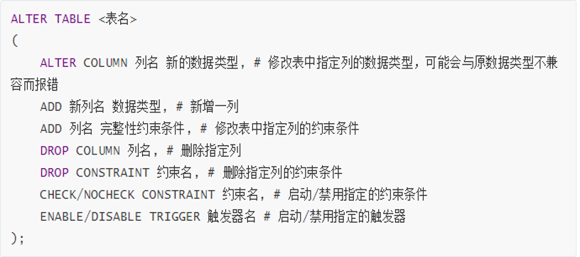

注释方式：数据定义创建、删除、查看数据库创建、修改、删除基本表修改表名创建、删除索引数据查询查询整表查询某列，某些列添加表达式与文本列替换列名去除重复项WHERE 语句统计函数查询的顺序连接查询合并查询嵌套查询LIMIT 语句储存查询结果到表中数据更新插入数据修改数据删除数据视图创建视图删除视图查询视图更新视图数据备份与恢复备份恢复
注释方式：
-- <注释>
- 注意有个空格
# <注释>
/* <注释> */
数据定义
创建、删除、查看数据库
- 创建数据库
1-- 语法2CREATE DATABASE <database_name>;3# 举例4CREATE DATABASE mysql_0;xxxxxxxxxx21mysql> CREATE DATABASE mysql_0;2Query OK, 1 row affected (0.13 sec)
- 查看数据库
xxxxxxxxxx21# 语法2SHOW DATABASES;xxxxxxxxxx131mysql> SHOW DATABASES;2+--------------------+3| Database |4+--------------------+5| information_schema |6| mysql |7| mysql_0 |8| performance_schema |9| sakila |10| sys |11| world |12+--------------------+137 rows in set (0.00 sec)
- 删除数据库
xxxxxxxxxx41# 语法2DROP DATABASE <database_name>;3# 举例4DROP DATABASE mysql_0;x1mysql> DROP DATABASE mysql_0;2Query OK, 0 rows affected (0.19 sec)34mysql> SHOW DATABASES;5+--------------------+6| Database |7+--------------------+8| information_schema |9| mysql |10| performance_schema |11| sakila |12| sys |13| world |14+--------------------+156 rows in set (0.00 sec)
- 进入数据库
xxxxxxxxxx41# 语法2USE <database_name>;3# 举例4USE mysql_0;xxxxxxxxxx21mysql> USE mysql_0;2Database changed
创建、修改、删除基本表
- 创建基本表
xxxxxxxxxx391# 语法2CREATE TABLE <table_name>3( 4列名1 数据类型1 [列级完整性约束条件1], 5列名2 数据类型2 [列级完整性约束条件1], 6... 7[表级完整性约束条件] 8);9# 举例10CREATE TABLE C11(12CNO char(5) NOT NULL,13CN varchar(20),14CT int,15PRIMARY KEY (CNO),16CHECK (CT >= 1)17) default charset utf8; # 如果文本编码没有问题，最后一行可以省略，只保留右括号与分号。1819CREATE TABLE S20(21SNO char(5),22SN varchar(8) NOT NULL,23SEX char(2) NOT NULL,24AGE int NOT NULL,25DEPT varchar(8),26PRIMARY KEY (SNO),27UNIQUE (SN),28CONSTRAINT ck_S CHECK (SEX IN ('男','女') AND AGE > 0)29) default charset utf8;3031CREATE TABLE SC32(33SNO char(5) NOT NULL,34CNO char(5) NOT NULL,35SCORE numeric(3, 0),36CONSTRAINT pk_SC PRIMARY KEY (SNO, CNO),37CONSTRAINT fk_SNO_SC FOREIGN KEY (SNO) REFERENCES S(SNO),38CONSTRAINT fk_CNO_SC FOREIGN KEY (CNO) REFERENCES C(CNO)39) default charset utf8;xxxxxxxxxx331mysql> CREATE TABLE C2 -> (3 -> CNO char(5) NOT NULL,4 -> CN varchar(20),5 -> CT int,6 -> PRIMARY KEY (CNO),7 -> CHECK (CT >= 1)8 -> ) default charset utf8;9Query OK, 0 rows affected, 1 warning (0.87 sec)1011mysql> CREATE TABLE S12 -> (13 -> SNO char(5),14 -> SN varchar(8) NOT NULL,15 -> SEX char(2) NOT NULL,16 -> AGE int NOT NULL,17 -> DEPT varchar(8),18 -> PRIMARY KEY (SNO),19 -> UNIQUE (SN),20 -> CONSTRAINT ck_S CHECK (SEX IN ('男','女') AND AGE > 0)21 -> ) default charset utf8;22Query OK, 0 rows affected, 1 warning (0.71 sec)2324mysql> CREATE TABLE SC25 -> (26 -> SNO char(5) NOT NULL,27 -> CNO char(5) NOT NULL,28 -> SCORE numeric(3, 0),29 -> CONSTRAINT pk_SC PRIMARY KEY (SNO, CNO),30 -> CONSTRAINT fk_SNO_SC FOREIGN KEY (SNO) REFERENCES S(SNO),31 -> CONSTRAINT fk_CNO_SC FOREIGN KEY (CNO) REFERENCES C(CNO)32 -> ) default charset utf8;33Query OK, 0 rows affected, 1 warning (0.66 sec)
MySQL数据类型
- 数值型

- 文本型

- 日期型

SQL约束条件
- NULL / NOT NULL

- UNIQUE

- PRIMARY KEY

- FOREIGN KEY

- CHECK

- DEFAULT

查看基本表
xxxxxxxxxx81# 查看当前数据库中所有的表2# 语法3SHOW TABLES;4# 查看某个表的结构5# 语法6DESC table_name;7# 举例8DESC C;xxxxxxxxxx191mysql> SHOW TABLES;2+-------------------+3| Tables_in_mysql_0 |4+-------------------+5| c |6| s |7| sc |8+-------------------+93 rows in set (0.00 sec)1011mysql> DESC C;12+-------+-------------+------+-----+---------+-------+13| Field | Type | Null | Key | Default | Extra |14+-------+-------------+------+-----+---------+-------+15| CNO | char(5) | NO | PRI | NULL | |16| CN | varchar(20) | YES | | NULL | |17| CT | int(11) | YES | | NULL | |18+-------+-------------+------+-----+---------+-------+193 rows in set (0.00 sec)修改基本表
xxxxxxxxxx31# SQL语言用ALTER TABLE命令来修改基本表。修改基本表的行为包含：添加新列，添加列的完整性约束条件，删除列，删除列的完整性约束条件，改变原有列的数据类型，禁用参照完整性。2# 语法3
修改表后可以查看表的结构是否改变。
删除基本表
xxxxxxxxxx51# 语法2DROP TABLE <table_name>;3# 注意4# 删除表需要相应的操作权限，一般只删除自己建立的无用表；执行删除命令后是否真能完成删除操作，取决与其操作是否违反了完整性约束条件。5xxxxxxxxxx111mysql> DROP TABLE SC;2Query OK, 0 rows affected (0.43 sec)34mysql> SHOW TABLES;5+-------------------+6| Tables_in_mysql_0 |7+-------------------+8| c |9| s |10+-------------------+112 rows in set (0.05 sec)
修改表名
xxxxxxxxxx41# 语法2ALTER TABLE old_name RENAME TO new_name;3# 注意4 # 表名、视图名、列名都可以修改，但是数据库名是无法修改的。
创建、删除索引
索引的概念
索引是双刃剑，添加索引，可以加速数据查询，但会减慢更新速度。
索引分为聚集索引和非聚集索引，聚集索引比非聚集索引速度快，一个表中只有一个聚集索引，但可以有多个非聚集索引。
聚集索引一般是表中的主键索引，如果表中没有显示指定主键，则会选择表中的第一个不允许为NULL的唯一索引，如果还是没有的话，就采用 Innodb 存储引擎为每行数据内置的6字节 ROWID 作为聚集索引。
创建索引
xxxxxxxxxx71# 语法2CREATE [UNIQUE]3[CLUSTERED/NONCLUSTERED]4INDEX<索引名>ON{<表名>/<视图名>}(<列名>[ASC/DESC])5# 其中，UNIQUE表示唯一索引，CLUSTERED表示建立聚集索引，NONCLUSTERED表示建立非聚集索引。6# 注意7# MySQL的语法定义聚集索引与非聚集索引与上述语法稍有不同，不能用上面的语法定义聚集/非聚集索引，会报错。删除索引
xxxxxxxxxx51# 语法2DROP INDEX table_name<index_name>;3DROP INDEX view_name<index_name>;4# MySQL 语法5ALTER TABLE table_name DROP INDEX index_name;
数据查询
SELECT
SELECT 语句用于从数据库中选取数据，结果被存储在一个结果表中，称为结果集。
xxxxxxxxxx111# 语法 MySQL2SELECT column_name1,column_name2 FROM table_name3[WHERE exp]4[LIMIT N][OFFSET M]5 # 注意6-- * 查询语句中你可以使用一个或者多个表，表之间使用逗号(,)分割，并使用WHERE语句来设定查询条件。7-- * SELECT 命令可以读取一条或者多条记录。8-- * 使用星号（*）来代替其他字段，SELECT语句会返回表的所有字段数据9-- * 使用 WHERE 语句来包含任何条件。10-- * 使用 LIMIT 属性来设定返回的记录数。11-- * 通过OFFSET指定SELECT语句开始查询的数据偏移量。默认情况下偏移量为0。xxxxxxxxxx71# 语法 SQL Server2SELECT [ALL/DISTINCT] <目标表达式1>[[AS] 列别名1][,<目标表达式2>[[AS] 列别名2]]...3[INTO <新表名>]4FROM <表名1/视图名1>[[AS] 表别名1][,<表名2/视图名2>[[AS] 表别名2]]...5[WHERE <元组/记录筛选条件表达式>]6[GROUP BY <列名11>[,<列名12>]...[HAVING <分组筛选条件表达式>]]7[ORDER BY <列名21>[ASC/DESC][,<列名22>[ASC/DESC]]...]查询整表
xxxxxxxxxx131mysql> SELECT * FROM C;2+-----+----------+------+3| CNO | CN | CT |4+-----+----------+------+5| C1 | C语言 | 4 |6| C2 | 离散数学 | 2 |7| C3 | 操作系统 | 3 |8| C4 | 数据结构 | 4 |9| C5 | 数据库 | 4 |10| C6 | 汇编语言 | 3 |11| C7 | 信息基础 | 2 |12+-----+----------+------+137 rows in set (0.08 sec)查询某列，某些列
xxxxxxxxxx271mysql> SELECT CN FROM C;2+----------+3| CN |4+----------+5| C语言 |6| 离散数学 |7| 操作系统 |8| 数据结构 |9| 数据库 |10| 汇编语言 |11| 信息基础 |12+----------+137 rows in set (0.00 sec)1415mysql> SELECT CNO,CN FROM C;16+-----+----------+17| CNO | CN |18+-----+----------+19| C1 | C语言 |20| C2 | 离散数学 |21| C3 | 操作系统 |22| C4 | 数据结构 |23| C5 | 数据库 |24| C6 | 汇编语言 |25| C7 | 信息基础 |26+-----+----------+277 rows in set (0.00 sec)添加表达式与文本列
xxxxxxxxxx271mysql> SELECT SN,2019-AGE FROM S;2+------+----------+3| SN | 2019-AGE |4+------+----------+5| 李 | 1998 |6| 王 | 1999 |7| 陈 | 1996 |8| 张 | 2000 |9| 吴 | 1998 |10| 徐 | 1997 |11| 陈东 | 1999 |12+------+----------+137 rows in set (0.00 sec)1415mysql> SELECT SN,'出生日期',2019-AGE,lower(DEPT) FROM S;16+------+----------+----------+-------------+17| SN | 出生日期 | 2019-AGE | lower(DEPT) |18+------+----------+----------+-------------+19| 李 | 出生日期 | 1998 | 信息 |20| 王 | 出生日期 | 1999 | 计算机 |21| 陈 | 出生日期 | 1996 | 自动化 |22| 张 | 出生日期 | 2000 | 自动化 |23| 吴 | 出生日期 | 1998 | 信息 |24| 徐 | 出生日期 | 1997 | 计算机 |25| 陈东 | 出生日期 | 1999 | 信息 |26+------+----------+----------+-------------+277 rows in set (0.00 sec)替换列名
xxxxxxxxxx341mysql> SELECT SN,'出生日期',2019-AGE,lower(DEPT) FROM S;2/* 同时显示新列名与旧列名3new_column_name(old_column_name)4*/5+------+----------+----------+-------------+6| SN | 出生日期 | 2019-AGE | lower(DEPT) |7+------+----------+----------+-------------+8| 李 | 出生日期 | 1998 | 信息 |9| 王 | 出生日期 | 1999 | 计算机 |10| 陈 | 出生日期 | 1996 | 自动化 |11| 张 | 出生日期 | 2000 | 自动化 |12| 吴 | 出生日期 | 1998 | 信息 |13| 徐 | 出生日期 | 1997 | 计算机 |14| 陈东 | 出生日期 | 1999 | 信息 |15+------+----------+----------+-------------+167 rows in set (0.00 sec)1718mysql> SELECT SN SNAME,'出生日期:' BIRTH,2019-AGE BIRTHDAY,DEPT AS DEPARTMENT FROM S; 19/* 替换列名成新20-- old_column_name new_column_name21-- old_column_name ASnew_column_name22*/23+-------+-----------+----------+------------+24| SNAME | BIRTH | BIRTHDAY | DEPARTMENT |25+-------+-----------+----------+------------+26| 李 | 出生日期: | 1998 | 信息 |27| 王 | 出生日期: | 1999 | 计算机 |28| 陈 | 出生日期: | 1996 | 自动化 |29| 张 | 出生日期: | 2000 | 自动化 |30| 吴 | 出生日期: | 1998 | 信息 |31| 徐 | 出生日期: | 1997 | 计算机 |32| 陈东 | 出生日期: | 1999 | 信息 |33+-------+-----------+----------+------------+347 rows in set (0.00 sec)去除重复项
使用 DISTINCT 选项
xxxxxxxxxx271mysql> SELECT SNO FROM SC;2+-----+3| SNO |4+-----+5| S1 |6| S3 |7| S1 |8| S4 |9| S5 |10| S3 |11| S3 |12| S4 |13| S4 |14| S3 |15+-----+1610 rows in set (0.03 sec)1718mysql> SELECT DISTINCT SNO FROM SC;19+-----+20| SNO |21+-----+22| S1 |23| S3 |24| S4 |25| S5 |26+-----+274 rows in set (0.01 sec)WHERE 语句
添加 WHERE 子句限定查询结果
xxxxxxxxxx961mysql> SELECT SN FROM S;2+------+3| SN |4+------+5| 吴 |6| 张 |7| 徐 |8| 李 |9| 王 |10| 陈 |11| 陈东 |12+------+137 rows in set (0.01 sec)1415mysql> SELECT SN FROM S WHERE DEPT='计算机';16-- WHERE 表达式可以使用等式，也可以使用 IS 或 NOT IS ，不在赘述17+----+18| SN |19+----+20| 王 |21| 徐 |22+----+232 rows in set (0.00 sec)2425mysql> SELECT SNO,AGE FROM S WHERE AGE < 20;26-- WHERE 表达式可以使用比较表达式27+-----+-----+28| SNO | AGE |29+-----+-----+30| S4 | 19 |31+-----+-----+321 row in set (0.00 sec)3334mysql> SELECT SNO,AGE FROM S WHERE AGE BETWEEN 20 AND 30;35-- WHERE 表达式可以使用 BETWEEN ... AND ... 或加 NOT 句式 36+-----+-----+37| SNO | AGE |38+-----+-----+39| S1 | 21 |40| S2 | 20 |41| S3 | 23 |42| S5 | 21 |43| S6 | 22 |44| S7 | 20 |45+-----+-----+466 rows in set (0.00 sec)4748mysql> SELECT SNO,AGE FROM S WHERE AGE NOT BETWEEN 20 AND 30;49+-----+-----+50| SNO | AGE |51+-----+-----+52| S4 | 19 |53+-----+-----+541 row in set (0.00 sec)5556mysql> SELECT SNO,AGE FROM S WHERE AGE IN (21,20);57-- WHERE 表达式可以使用 IN 加 一个选项集合 的句式，也可以添加 NOT 58+-----+-----+59| SNO | AGE |60+-----+-----+61| S1 | 21 |62| S2 | 20 |63| S5 | 21 |64| S7 | 20 |65+-----+-----+664 rows in set (0.00 sec)6768mysql> SELECT SNO,AGE FROM S WHERE AGE NOT IN (21,20);69+-----+-----+70| SNO | AGE |71+-----+-----+72| S3 | 23 |73| S4 | 19 |74| S6 | 22 |75+-----+-----+763 rows in set (0.00 sec)7778mysql> SELECT SNO,AGE FROM S WHERE AGE LIKE '%1';79-- WHERE 表达式可以使用 LIKE 加通配符表达式的形式。这里的通配符表达式需要使用单引号括起，_表示单一字符，%表示任意字符。如果在原列记录中包含这两个字符，为防止错误，要使用反义符 \ 。 80+-----+-----+81| SNO | AGE |82+-----+-----+83| S1 | 21 |84| S5 | 21 |85+-----+-----+862 rows in set (0.00 sec)8788mysql> SELECT SNO,AGE FROM S WHERE AGE LIKE '_1';89+-----+-----+90| SNO | AGE |91+-----+-----+92| S1 | 21 |93| S5 | 21 |94+-----+-----+952 rows in set (0.00 sec)96# 多个WHERE表达式可以使用 AND 或 OR 连接统计函数
SELECT 语句可以添加一些统计函数进行统计汇总查询
xxxxxxxxxx231mysql> SELECT COUNT(*) AS '学生总人数' FROM S;2+------------+3| 学生总人数 |4+------------+5| 7 |6+------------+71 row in set (0.00 sec)89mysql> SELECT COUNT(DISTINCT SNO) FROM SC;10+---------------------+11| COUNT(DISTINCT SNO) |12+---------------------+13| 4 |14+---------------------+151 row in set (0.00 sec)1617mysql> SELECT COUNT(SNO) FROM SC;18+------------+19| COUNT(SNO) |20+------------+21| 10 |22+------------+231 row in set (0.00 sec)xxxxxxxxxx241mysql> SELECT * FROM SC;2+-----+-----+-------+3| SNO | CNO | SCORE |4+-----+-----+-------+5| S1 | C1 | 90 |6| S1 | C2 | 85 |7| S3 | C1 | 73 |8| S3 | C4 | 88 |9| S3 | C5 | 85 |10| S3 | C7 | 68 |11| S4 | C2 | 65 |12| S4 | C5 | 90 |13| S4 | C6 | 79 |14| S5 | C2 | 89 |15+-----+-----+-------+1610 rows in set (0.00 sec)1718mysql> SELECT COUNT(*),MAX(SCORE),MIN(SCORE),AVG(SCORE) FROM SC;19+----------+------------+------------+------------+20| COUNT(*) | MAX(SCORE) | MIN(SCORE) | AVG(SCORE) |21+----------+------------+------------+------------+22| 10 | 90 | 65 | 81.2000 |23+----------+------------+------------+------------+241 row in set (0.00 sec)xxxxxxxxxx391mysql> SELECT * FROM SC;2+-----+-----+-------+3| SNO | CNO | SCORE |4+-----+-----+-------+5| S1 | C1 | 90 |6| S1 | C2 | 85 |7| S3 | C1 | 73 |8| S3 | C4 | 88 |9| S3 | C5 | 85 |10| S3 | C7 | 68 |11| S4 | C2 | 65 |12| S4 | C5 | 90 |13| S4 | C6 | 79 |14| S5 | C2 | 89 |15+-----+-----+-------+1610 rows in set (0.00 sec)1718mysql> SELECT CNO,COUNT(SNO) AS '选课人数' FROM SC GROUP BY CNO;19+-----+----------+20| CNO | 选课人数 |21+-----+----------+22| C1 | 2 |23| C2 | 3 |24| C4 | 1 |25| C5 | 2 |26| C6 | 1 |27| C7 | 1 |28+-----+----------+296 rows in set (0.00 sec)3031mysql> SELECT CNO,COUNT(SNO) FROM SC GROUP BY CNO HAVING COUNT(*)>=2;32+-----+------------+33| CNO | COUNT(SNO) |34+-----+------------+35| C1 | 2 |36| C2 | 3 |37| C5 | 2 |38+-----+------------+393 rows in set (0.00 sec)查询的顺序
xxxxxxxxxx231mysql> SELECT SNO,SCORE FROM SC WHERE CNO='C2' ORDER BY SCORE DESC;2+-----+-------+3| SNO | SCORE |4+-----+-------+5| S5 | 89 |6| S1 | 85 |7| S4 | 65 |8+-----+-------+93 rows in set (0.00 sec)1011mysql> SELECT * FROM S ORDER BY DEPT,AGE DESC;12+-----+------+-----+-----+--------+13| SNO | SN | SEX | AGE | DEPT |14+-----+------+-----+-----+--------+15| S1 | 李 | 男 | 21 | 信息 |16| S5 | 吴 | 女 | 21 | 信息 |17| S7 | 陈东 | 男 | 20 | 信息 |18| S3 | 陈 | 女 | 23 | 自动化 |19| S4 | 张 | 男 | 19 | 自动化 |20| S6 | 徐 | 女 | 22 | 计算机 |21| S2 | 王 | 女 | 20 | 计算机 |22+-----+------+-----+-----+--------+237 rows in set (0.00 sec)连接查询
xxxxxxxxxx531mysql> SELECT * FROM S,SC WHERE S.SNO=SC.SNO;2+-----+----+-----+-----+--------+-----+-----+-------+3| SNO | SN | SEX | AGE | DEPT | SNO | CNO | SCORE |4+-----+----+-----+-----+--------+-----+-----+-------+5| S1 | 李 | 男 | 21 | 信息 | S1 | C1 | 90 |6| S1 | 李 | 男 | 21 | 信息 | S1 | C2 | 85 |7| S3 | 陈 | 女 | 23 | 自动化 | S3 | C1 | 73 |8| S3 | 陈 | 女 | 23 | 自动化 | S3 | C4 | 88 |9| S3 | 陈 | 女 | 23 | 自动化 | S3 | C5 | 85 |10| S3 | 陈 | 女 | 23 | 自动化 | S3 | C7 | 68 |11| S4 | 张 | 男 | 19 | 自动化 | S4 | C2 | 65 |12| S4 | 张 | 男 | 19 | 自动化 | S4 | C5 | 90 |13| S4 | 张 | 男 | 19 | 自动化 | S4 | C6 | 79 |14| S5 | 吴 | 女 | 21 | 信息 | S5 | C2 | 89 |15+-----+----+-----+-----+--------+-----+-----+-------+1610 rows in set (0.00 sec)1718mysql> SELECT S.SNO,SN,SEX,AGE,DEPT,CNO,SCORE FROM S,SC WHERE S.SNO=SC.SNO;19+-----+----+-----+-----+--------+-----+-------+20| SNO | SN | SEX | AGE | DEPT | CNO | SCORE |21+-----+----+-----+-----+--------+-----+-------+22| S1 | 李 | 男 | 21 | 信息 | C1 | 90 |23| S1 | 李 | 男 | 21 | 信息 | C2 | 85 |24| S3 | 陈 | 女 | 23 | 自动化 | C1 | 73 |25| S3 | 陈 | 女 | 23 | 自动化 | C4 | 88 |26| S3 | 陈 | 女 | 23 | 自动化 | C5 | 85 |27| S3 | 陈 | 女 | 23 | 自动化 | C7 | 68 |28| S4 | 张 | 男 | 19 | 自动化 | C2 | 65 |29| S4 | 张 | 男 | 19 | 自动化 | C5 | 90 |30| S4 | 张 | 男 | 19 | 自动化 | C6 | 79 |31| S5 | 吴 | 女 | 21 | 信息 | C2 | 89 |32+-----+----+-----+-----+--------+-----+-------+3310 rows in set (0.00 sec)3435mysql> SELECT S.SNO,SN,SEX,AGE,DEPT,CNO,SCORE FROM S LEFT OUTER JOIN SC ON S.SNO=SC.SNO;36+-----+------+-----+-----+--------+------+-------+37| SNO | SN | SEX | AGE | DEPT | CNO | SCORE |38+-----+------+-----+-----+--------+------+-------+39| S1 | 李 | 男 | 21 | 信息 | C1 | 90 |40| S1 | 李 | 男 | 21 | 信息 | C2 | 85 |41| S2 | 王 | 女 | 20 | 计算机 | NULL | NULL |42| S3 | 陈 | 女 | 23 | 自动化 | C1 | 73 |43| S3 | 陈 | 女 | 23 | 自动化 | C4 | 88 |44| S3 | 陈 | 女 | 23 | 自动化 | C5 | 85 |45| S3 | 陈 | 女 | 23 | 自动化 | C7 | 68 |46| S4 | 张 | 男 | 19 | 自动化 | C2 | 65 |47| S4 | 张 | 男 | 19 | 自动化 | C5 | 90 |48| S4 | 张 | 男 | 19 | 自动化 | C6 | 79 |49| S5 | 吴 | 女 | 21 | 信息 | C2 | 89 |50| S6 | 徐 | 女 | 22 | 计算机 | NULL | NULL |51| S7 | 陈东 | 男 | 20 | 信息 | NULL | NULL |52+-----+------+-----+-----+--------+------+-------+5313 rows in set (0.00 sec)合并查询
xxxxxxxxxx31SELECT SNO AS 学号,SUM(SCORE) AS 总分 FROM SC WHERE SNO='S1'2UNION3SELECT SNO AS 学号,SUM(SCORE) AS 总分 FROM SC WHERE SNO='S5';xxxxxxxxxx101mysql> SELECT SNO AS 学号,SUM(SCORE) AS 总分 FROM SC WHERE SNO='S1'2 -> UNION3 -> SELECT SNO AS 学号,SUM(SCORE) AS 总分 FROM SC WHERE SNO='S5';4+------+------+5| 学号 | 总分 |6+------+------+7| S1 | 175 |8| S5 | 89 |9+------+------+102 rows in set (0.00 sec)嵌套查询
xxxxxxxxxx261mysql> SELECT SNO,SN,DEPT FROM S WHERE DEPT IN(SELECT DEPT FROM S WHERE SN='王');2+-----+----+--------+3| SNO | SN | DEPT |4+-----+----+--------+5| S2 | 王 | 计算机 |6| S6 | 徐 | 计算机 |7+-----+----+--------+82 rows in set (0.00 sec)910mysql> SELECT A.SNO,A.SN,B.DEPT FROM S A,S B WHERE A.DEPT=B.DEPT AND B.SN='王';11+-----+----+--------+12| SNO | SN | DEPT |13+-----+----+--------+14| S2 | 王 | 计算机 |15| S6 | 徐 | 计算机 |16+-----+----+--------+172 rows in set (0.00 sec)1819mysql> SELECT SNO,SN,DEPT FROM S WHERE DEPT=(SELECT DEPT FROM S WHERE SN='王');20+-----+----+--------+21| SNO | SN | DEPT |22+-----+----+--------+23| S2 | 王 | 计算机 |24| S6 | 徐 | 计算机 |25+-----+----+--------+262 rows in set (0.00 sec)LIMIT 语句
xxxxxxxxxx61# 取前n条数据2LIMIT n3# 取第n行的数据4LIMIT n-1, 15# 取第n行到第m行之间的数据6LIMIT n-1,m-n+1xxxxxxxxxx311mysql> SELECT * FROM C;2+-----+----------+------+3| CNO | CN | CT |4+-----+----------+------+5| C1 | C语言 | 4 |6| C2 | 离散数学 | 2 |7| C3 | 操作系统 | 3 |8| C4 | 数据结构 | 4 |9| C5 | 数据库 | 4 |10| C6 | 汇编语言 | 3 |11| C7 | 信息基础 | 2 |12+-----+----------+------+137 rows in set (0.00 sec)1415mysql> SELECT * FROM C LIMIT 3;16+-----+----------+------+17| CNO | CN | CT |18+-----+----------+------+19| C1 | C语言 | 4 |20| C2 | 离散数学 | 2 |21| C3 | 操作系统 | 3 |22+-----+----------+------+233 rows in set (0.00 sec)2425mysql> SELECT * FROM C LIMIT 3,1;26+-----+----------+------+27| CNO | CN | CT |28+-----+----------+------+29| C4 | 数据结构 | 4 |30+-----+----------+------+311 row in set (0.00 sec)储存查询结果到表中
xxxxxxxxxx41# MySQL 语法2CREATE TABLE table_name3AS4SELECT ...;xxxxxxxxxx251mysql> CREATE TABLE C_1TO3 AS SELECT * FROM C LIMIT 3;2Query OK, 3 rows affected (0.75 sec)3Records: 3 Duplicates: 0 Warnings: 045mysql> show tables;6+-------------------+7| Tables_in_mysql_0 |8+-------------------+9| c |10| c_1to3 |11| deptage |12| s |13| sc |14+-------------------+155 rows in set (0.00 sec)1617mysql> SELECT * FROM C_1TO3;18+-----+----------+------+19| CNO | CN | CT |20+-----+----------+------+21| C1 | C语言 | 4 |22| C2 | 离散数学 | 2 |23| C3 | 操作系统 | 3 |24+-----+----------+------+253 rows in set (0.00 sec)数据更新
INSERT 、 UPDATE 、 DELETE
插入数据
xxxxxxxxxx41# 语法2INSERT INTO <table_name>[column_name1, column_name2,...]3VALUES4(value1, value2, ...);注意：
- 若没有指定任何列，则默认修改全部列。
- 若某些列名没有出现在into子句中，则在新纪录中这些列的值取空值。
插入单个元组
xxxxxxxxxx41mysql> INSERT INTO C2-> VALUES3-> ('C1','C语言',4);4Query OK, 1 row affected (0.07 sec)插入多个元组
xxxxxxxxxx101mysql> INSERT INTO C2-> VALUES3-> ('C2','离散数学',2),4-> ('C3','操作系统',3),5-> ('C4','数据结构',4),6-> ('C5','数据库',4),7-> ('C6','汇编语言',3),8-> ('C7','信息基础',2);9Query OK, 6 rows affected (0.09 sec)10Records: 6 Duplicates: 0 Warnings: 0
查看表的全部内容
xxxxxxxxxx11SELECT * FROM <table_name>;xxxxxxxxxx131mysql> SELECT * FROM C;2+-----+----------+------+3| CNO | CN | CT |4+-----+----------+------+5| C1 | C语言 | 4 |6| C2 | 离散数学 | 2 |7| C3 | 操作系统 | 3 |8| C4 | 数据结构 | 4 |9| C5 | 数据库 | 4 |10| C6 | 汇编语言 | 3 |11| C7 | 信息基础 | 2 |12+-----+----------+------+137 rows in set (0.00 sec)插入子查询结果
xxxxxxxxxx211mysql> CREATE TABLE DEPTAGE2-> (3-> DEPT varchar(20),4-> AVGAGE tinyint5-> ) default charset utf8;6Query OK, 0 rows affected, 1 warning (0.35 sec)78mysql> INSERT INTO DEPTAGE(DEPT,AVGAGE)9-> SELECT DEPT,AVG(AGE) FROM S GROUP BY DEPT;10Query OK, 3 rows affected (0.13 sec)11Records: 3 Duplicates: 0 Warnings: 01213mysql> SELECT * FROM DEPTAGE;14+--------+--------+15| DEPT | AVGAGE |16+--------+--------+17| 信息 | 20 |18| 计算机 | 20 |19| 自动化 | 21 |20+--------+--------+213 rows in set (0.00 sec)插入某些列
xxxxxxxxxx251mysql> INSERT INTO SC(SNO,CNO)2-> VALUES3-> ('S7','C1');4Query OK, 1 row affected (0.15 sec)56mysql> SELECT * FROM SC;7+-----+-----+-------+8| SNO | CNO | SCORE |9+-----+-----+-------+10| S1 | C1 | 90 |11| S1 | C2 | 85 |12| S2 | C1 | 84 |13| S2 | C2 | 94 |14| S2 | C3 | 83 |15| S3 | C1 | 73 |16| S3 | C4 | 88 |17| S3 | C5 | 85 |18| S3 | C7 | 68 |19| S4 | C2 | 65 |20| S4 | C5 | 90 |21| S4 | C6 | 79 |22| S5 | C2 | 89 |23| S7 | C1 | NULL |24+-----+-----+-------+2514 rows in set (0.00 sec)
修改数据
xxxxxxxxxx41# 语法2UPDATE <表名>3SET <列名>=<表达式>[,<列名>=<表达式>]...4[WHERE<条件>]功能：修改指定表中满足WHERE子句条件的元组。
其中SET子句用于指定修改方法，即用<表达式>的值取代相应的属性列的值。如果省略WHERE子句，则表示要修改表中的所有元组。
修改某一个元组的值
xxxxxxxxxx331mysql> SELECT * FROM S;2+-----+------+-----+-----+--------+3| SNO | SN | SEX | AGE | DEPT |4+-----+------+-----+-----+--------+5| S1 | 李 | 男 | 20 | 信息 |6| S2 | 王 | 女 | 19 | 计算机 |7| S3 | 陈 | 女 | 23 | 自动化 |8| S4 | 张 | 男 | 18 | 自动化 |9| S5 | 吴 | 女 | 20 | 信息 |10| S6 | 徐 | 女 | 21 | 计算机 |11| S7 | 陈东 | 男 | 19 | 信息 |12+-----+------+-----+-----+--------+137 rows in set (0.00 sec)1415mysql> UPDATE S16-> SET AGE=2217-> WHERE SNO='S3';18Query OK, 1 row affected (0.13 sec)19Rows matched: 1 Changed: 1 Warnings: 02021mysql> SELECT * FROM S;22+-----+------+-----+-----+--------+23| SNO | SN | SEX | AGE | DEPT |24+-----+------+-----+-----+--------+25| S1 | 李 | 男 | 20 | 信息 |26| S2 | 王 | 女 | 19 | 计算机 |27| S3 | 陈 | 女 | 22 | 自动化 |28| S4 | 张 | 男 | 18 | 自动化 |29| S5 | 吴 | 女 | 20 | 信息 |30| S6 | 徐 | 女 | 21 | 计算机 |31| S7 | 陈东 | 男 | 19 | 信息 |32+-----+------+-----+-----+--------+337 rows in set (0.05 sec)修改多个元组的值
xxxxxxxxxx181mysql> UPDATE S2-> SET AGE=AGE+1;3Query OK, 7 rows affected (0.14 sec)4Rows matched: 7 Changed: 7 Warnings: 056mysql> SELECT * FROM S;7+-----+------+-----+-----+--------+8| SNO | SN | SEX | AGE | DEPT |9+-----+------+-----+-----+--------+10| S1 | 李 | 男 | 21 | 信息 |11| S2 | 王 | 女 | 20 | 计算机 |12| S3 | 陈 | 女 | 23 | 自动化 |13| S4 | 张 | 男 | 19 | 自动化 |14| S5 | 吴 | 女 | 21 | 信息 |15| S6 | 徐 | 女 | 22 | 计算机 |16| S7 | 陈东 | 男 | 20 | 信息 |17+-----+------+-----+-----+--------+187 rows in set (0.00 sec)带子查询的修改语句
xxxxxxxxxx471mysql> SELECT * FROM SC;2+-----+-----+-------+3| SNO | CNO | SCORE |4+-----+-----+-------+5| S1 | C1 | 90 |6| S1 | C2 | 85 |7| S2 | C1 | 84 |8| S2 | C2 | 94 |9| S2 | C3 | 83 |10| S3 | C1 | 73 |11| S3 | C4 | 88 |12| S3 | C5 | 85 |13| S3 | C7 | 68 |14| S4 | C2 | 65 |15| S4 | C5 | 90 |16| S4 | C6 | 79 |17| S5 | C2 | 89 |18| S7 | C1 | NULL |19+-----+-----+-------+2014 rows in set (0.00 sec)2122mysql> UPDATE SC23-> SET SCORE=024-> WHERE SNO IN(SELECT SNO FROM S WHERE DEPT='计算机');25Query OK, 3 rows affected (0.15 sec)26Rows matched: 3 Changed: 3 Warnings: 02728mysql> SELECT * FROM SC;29+-----+-----+-------+30| SNO | CNO | SCORE |31+-----+-----+-------+32| S1 | C1 | 90 |33| S1 | C2 | 85 |34| S2 | C1 | 0 |35| S2 | C2 | 0 |36| S2 | C3 | 0 |37| S3 | C1 | 73 |38| S3 | C4 | 88 |39| S3 | C5 | 85 |40| S3 | C7 | 68 |41| S4 | C2 | 65 |42| S4 | C5 | 90 |43| S4 | C6 | 79 |44| S5 | C2 | 89 |45| S7 | C1 | NULL |46+-----+-----+-------+4714 rows in set (0.00 sec)
删除数据
xxxxxxxxxx21# 语法2DELETE [FROM] <table_name>[WHERE <条件>]功能：从指定表中删除满足WHERE子句条件的所有元组。
如果省略WHERE子句，则表示删除表中的全部元组，但表的定义仍在字典中。还有一种方法可以快速删除表中全部元组，语法为
TRUNCATE <table_name> 。删除某一个元组的值
xxxxxxxxxx271mysql> DELETE FROM S2-> WHERE SNO='S7';3ERROR 1451 (23000): Cannot delete or update a parent row: a foreign key constraint fails (`mysql_0`.`sc`, CONSTRAINT `fk_SNO_SC` FOREIGN KEY (`SNO`) REFERENCES `s` (`SNO`))4# 删除失败，因为S表有一个外部键与之关联5mysql> DELETE FROM SC6-> WHERE SNO='S7';7Query OK, 1 row affected (0.08 sec)89mysql> SELECT * FROM SC;10+-----+-----+-------+11| SNO | CNO | SCORE |12+-----+-----+-------+13| S1 | C1 | 90 |14| S1 | C2 | 85 |15| S2 | C1 | 0 |16| S2 | C2 | 0 |17| S2 | C3 | 0 |18| S3 | C1 | 73 |19| S3 | C4 | 88 |20| S3 | C5 | 85 |21| S3 | C7 | 68 |22| S4 | C2 | 65 |23| S4 | C5 | 90 |24| S4 | C6 | 79 |25| S5 | C2 | 89 |26+-----+-----+-------+2713 rows in set (0.00 sec)删除多个元组的值
xxxxxxxxxx201mysql> DELETE FROM SC; # 删除所有记录2Query OK, 13 rows affected (0.17 sec)34mysql> SELECT * FROM SC;5Empty set (0.00 sec)67mysql> INSERT INTO SC8-> VALUES9-> ('S1','C1',90),10-> ('S1','C2',85),11-> ('S2','C1',84),12-> ('S2','C2',94);13Query OK, 4 rows affected (0.15 sec)14Records: 4 Duplicates: 0 Warnings: 01516mysql> TRUNCATE SC; # 删除所有记录17Query OK, 0 rows affected (0.95 sec)1819mysql> SELECT * FROM SC;20Empty set (0.11 sec)带子查询的删除语句
xxxxxxxxxx381mysql> INSERT INTO SC2-> VALUES3-> ('S1','C1',90),4-> ('S1','C2',85),5-> ('S2','C1',84),6-> ('S2','C2',94),7-> ('S2','C3',83),8-> ('S3','C1',73),9-> ('S3','C7',68),10-> ('S3','C4',88),11-> ('S3','C5',85),12-> ('S4','C2',65),13-> ('S4','C5',90),14-> ('S4','C6',79),15-> ('S5','C2',89);16Query OK, 13 rows affected (0.12 sec)17Records: 13 Duplicates: 0 Warnings: 01819mysql> DELETE FROM SC20-> WHERE SNO IN(SELECT SNO FROM S WHERE DEPT='计算机');21Query OK, 3 rows affected (0.13 sec)2223mysql> SELECT * FROM SC;24+-----+-----+-------+25| SNO | CNO | SCORE |26+-----+-----+-------+27| S1 | C1 | 90 |28| S1 | C2 | 85 |29| S3 | C1 | 73 |30| S3 | C4 | 88 |31| S3 | C5 | 85 |32| S3 | C7 | 68 |33| S4 | C2 | 65 |34| S4 | C5 | 90 |35| S4 | C6 | 79 |36| S5 | C2 | 89 |37+-----+-----+-------+3810 rows in set (0.01 sec)
视图
视图是从一个或几个基本表(视图)导出的表，它与基本表不同，是一个虚表。
创建视图
xxxxxxxxxx31# 语法2CREATE VIEW <view_name>[(column_name1,column_name2, ...)]3AS <子查询>注意：
- 子查询可以是任意复杂的SELECT语句，但是不允许有ORDER BY子句和DISTINCT短语。
- 组成视图的属性列名要么全部省略，要么全部指定
xxxxxxxxxx421mysql> show tables;2+-------------------+3| Tables_in_mysql_0 |4+-------------------+5| c |6| c_1to3 |7| deptage |8| s |9| sc |10+-------------------+115 rows in set (0.00 sec)1213mysql> SELECT * FROM C;14+-----+----------+------+15| CNO | CN | CT |16+-----+----------+------+17| C1 | C语言 | 4 |18| C2 | 离散数学 | 2 |19| C3 | 操作系统 | 3 |20| C4 | 数据结构 | 4 |21| C5 | 数据库 | 4 |22| C6 | 汇编语言 | 3 |23| C7 | 信息基础 | 2 |24+-----+----------+------+257 rows in set (0.00 sec)2627mysql> CREATE VIEW IS_C28 -> AS SELECT * FROM C WHERE CT>=3;29Query OK, 0 rows affected (0.12 sec)3031mysql> show tables;32+-------------------+33| Tables_in_mysql_0 |34+-------------------+35| c |36| c_1to3 |37| deptage |38| is_c |39| s |40| sc |41+-------------------+426 rows in set (0.00 sec)删除视图
xxxxxxxxxx21# 语法2DROP VIEW <view_name>xxxxxxxxxx141mysql> DROP VIEW IS_C;2Query OK, 0 rows affected (0.16 sec)34mysql> show tables;5+-------------------+6| Tables_in_mysql_0 |7+-------------------+8| c |9| c_1to3 |10| deptage |11| s |12| sc |13+-------------------+145 rows in set (0.00 sec)查询视图
xxxxxxxxxx221# 与基本表的查询语法一致2mysql> SELECT * FROM IS_C;3+-----+----------+------+4| CNO | CN | CT |5+-----+----------+------+6| C1 | C语言 | 4 |7| C3 | 操作系统 | 3 |8| C4 | 数据结构 | 4 |9| C5 | 数据库 | 4 |10| C6 | 汇编语言 | 3 |11+-----+----------+------+125 rows in set (0.00 sec)1314mysql> SELECT * FROM IS_C WHERE CT>3;15+-----+----------+------+16| CNO | CN | CT |17+-----+----------+------+18| C1 | C语言 | 4 |19| C4 | 数据结构 | 4 |20| C5 | 数据库 | 4 |21+-----+----------+------+223 rows in set (0.00 sec)更新视图
与基本表的更新的语法一致。有插入(INSERT)、删除(DELETE)、修改(UPDATE)三类操作。但是并不是所 有的视图都可以更新的。
xxxxxxxxxx291mysql> UPDATE IS_C SET CT=35 WHERE CNO='C1';2Query OK, 1 row affected (0.11 sec)3Rows matched: 1 Changed: 1 Warnings: 045mysql> SELECT * FROM IS_C;6+-----+----------+------+7| CNO | CN | CT |8+-----+----------+------+9| C1 | C语言 | 35 |10| C3 | 操作系统 | 3 |11| C4 | 数据结构 | 4 |12| C5 | 数据库 | 4 |13| C6 | 汇编语言 | 3 |14+-----+----------+------+155 rows in set (0.00 sec)1617mysql> SELECT * FROM C;18+-----+----------+------+19| CNO | CN | CT |20+-----+----------+------+21| C1 | C语言 | 35 |22| C2 | 离散数学 | 2 |23| C3 | 操作系统 | 3 |24| C4 | 数据结构 | 4 |25| C5 | 数据库 | 4 |26| C6 | 汇编语言 | 3 |27| C7 | 信息基础 | 2 |28+-----+----------+------+297 rows in set (0.00 sec)数据备份与恢复
备份
xxxxxxxxxx91-- 语法：2# mysqldump基本语法：3 # 1.备份一个数据库4mysqldump -u username -p database_name table_name1 table_name2 ... > BackupName.sql5 # 2.备份多个数据库6mysqldump -u username -p --databases dbname1,dbname2,... > BackupName.sql7 # 3.备份所有数据库8mysqldump -u username -p -all-databases > BackupName.sql9# 注意：这些命令与上方的命令不同，是在终端或命令行中执行的，而不是在mysql的shell中，要退出mysql。恢复也是。xxxxxxxxxx21C:\Users\Administrator>mysqldump -u root -p mysql_0 > E:/mysql_0.sql2Enter password: ******其中：
- 需要备份的表为空则整个数据库备份；
- BackupName.sql参数表设计备份文件的名称，文件名前面可以加上一个绝对路径。通常将数据库保存成一个 sql 文件；
恢复
xxxxxxxxxx21# 语法2mysql -u username -p database_name < backup.sqlbackup.sql 表示已经备份好的数据库的路径
xxxxxxxxxx21C:\Users\Administrator>mysql -u root -p mysql_0 < E:/mysql_0.sql2Enter password: ******